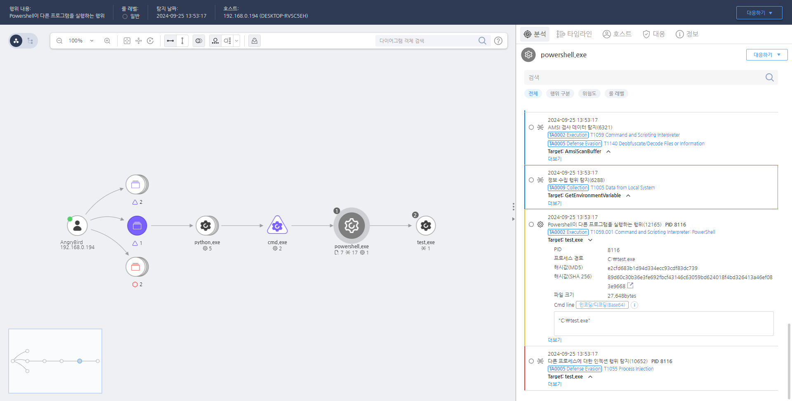

T1059.001.01 windows command shell
D3FEND
MITRE ATT&CK 액션을 기준으로 대응 방안을 작성
Detection
Powershell 환경에서 프로그램을 실행할 때 탐지합니다.
Detection(EDR)

https://172.18.10.125:8903/#/event/edr/66f39864002dc7940000031b
Response
해당 행위를 수행한 프로세스를 종료합니다.
Mitigations
PowerShell 실행 정책 강화 (M1038 - Execution Prevention)
- PowerShell 스크립트 실행 정책을 제한적으로 설정 (예:
AllSigned, RemoteSigned 등)
- 스크립트 실행을 엄격하게 제한하여 승인된 서명된 스크립트만 실행 가능하도록 설정
- PowerShell 스크립트 블록 로깅을 활성화하여 PowerShell 명령 및 스크립트 실행 기록을 로깅
- PowerShell Constrained Language Mode를 활성화하여 비인가된 스크립트나 명령이 실행되지 않도록 차단
PowerShell 암호화 및 악성 스크립트 탐지 (M1047 - System Logging & Monitoring)
- PowerShell 명령의 로그 기록 활성화 (스크립트 블록 로깅 및 전역 로깅 활성화)
- Sysmon (Event ID 1)을 사용하여 PowerShell 프로세스와 그 실행 내역을 모니터링
- PowerShell 로그에서 의심스러운 명령어나 스크립트 실행 탐지 및 분석
- EDR/XDR 솔루션을 사용하여 PowerShell을 통한 악성 코드 실행 및 비정상적인 명령 활동 탐지
PowerShell 및 관련 도구 사용 제한 (M1038 - Execution Prevention)
- AppLocker 또는 WDAC(Windows Defender Application Control)를 사용하여 PowerShell 및 비정상적인 실행 파일의 실행을 제한
- PowerShell의 비인가된 실행을 차단하고, 관리자 계정만 PowerShell을 실행할 수 있도록 제한
- PowerShell의 원격 실행(Remote PowerShell) 기능을 비활성화하여 원격 공격 방지
정상적인 PowerShell 스크립트와 비정상적인 스크립트 구별 (M1040 - Behavior-Based Detection)
- EDR/XDR을 활용하여 PowerShell 명령 및 스크립트의 비정상적인 실행을 실시간으로 탐지
- PowerShell 스크립트가 시스템과 네트워크에 대한 권한을 남용하는 행위를 탐지하고 차단
- PowerShell 원격 세션을 통한 비정상적인 명령어 실행 탐지 및 차단
사용자 계정 및 권한 관리 (M1018 - User Account Management)
- PowerShell을 사용할 수 있는 사용자 계정을 최소화하고, 최소 권한 원칙(Least Privilege Principle)을 적용하여 공격자가 PowerShell을 악용할 기회를 차단
- UAC(User Account Control)를 설정하여 관리자 권한을 요구하는 PowerShell 명령 실행 시 승인을 받도록 강제
- 관리자가 아닌 계정에서 PowerShell 실행을 차단하거나 제한적인 권한만 부여
파일 및 명령어 모니터링 (M1043 - Code Signing)
- PowerShell 스크립트 및 명령어 파일에 디지털 서명을 적용하여 서명되지 않은 파일의 실행을 차단
- 해당 스크립트가 비정상적으로 수정되거나 의심스러운 스크립트가 실행될 경우 경고를 발송
- PowerShell 명령어가 네트워크 및 시스템에서 민감한 작업을 수행하는지 감시
Affected Techniques
Action 실행시 함께 영향을 받는 다른 Techniqes
| D3FEND |
| D3-PM Platform Monitoring |
| D3-PLA Process Lineage Analysis |
| D3-PCA Process Code Segment Verification |